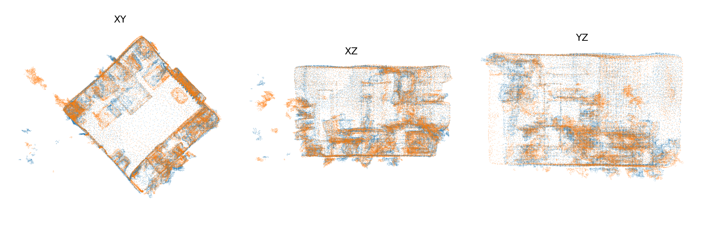
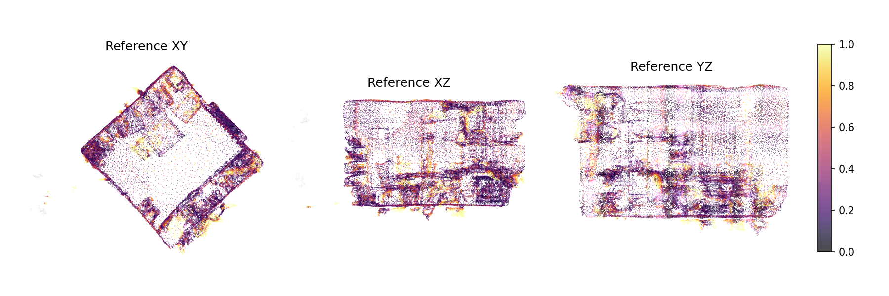
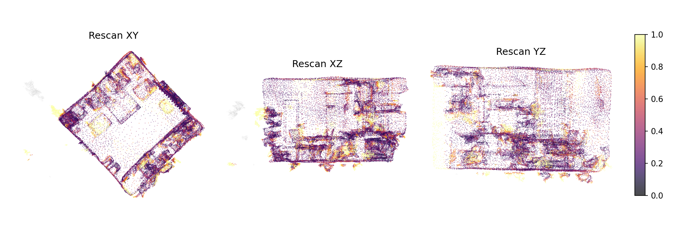

| split | validation |
|---|---|
| reference_scan_id | 0988ea72-eb32-2e61-8344-99e2283c2728 |
| rescan_scan_id | 9766cbf7-6321-2e2f-81e1-2b46533c64dd |
| reliability | reliable |
| comparable_ratio_ref | 0.995 |
| comparable_ratio_rescan | 0.975 |
| overlap_ref | 0.739 |
| overlap_rescan | 0.703 |
| overlap_mean | 0.721 |
| overlap_gate_value | 0.703 |
| unchanged_ratio_ref_obs | 0.931 |
| unchanged_ratio_rescan_obs | 0.894 |
| voxel_size_m | 0.02 |
| tau_m | 0.1 |
| overlap_delta_m | 0.05 |
| nn_search_radius_m | 0.5 |
| overlap_min | 0.3 |
| translation_scale_applied | 1.0 |
| runtime_sec | 1.37 |



| objectId | label_ref | label_rescan | score | type | type_confidence | ref_support_total | ref_support_observed | ref_ratio_changed_obs | ref_p95_changed_dist | res_support_total | res_support_observed | res_ratio_changed_obs | res_p95_changed_dist | low_support |
|---|---|---|---|---|---|---|---|---|---|---|---|---|---|---|
| 500 | unknown | laundry basket | 0.8790 | appeared | 0.90 | 0 | 0 | 0.0000 | 0.0000 | 562 | 562 | 0.8790 | 0.2964 | False |
| 33 | chair | chair | 0.8210 | moved_rigid | 0.70 | 821 | 821 | 0.0000 | 0.0000 | 553 | 553 | 0.8210 | 0.4271 | False |
| 32 | chair | chair | 0.7899 | moved_rigid | 0.70 | 595 | 595 | 0.7899 | 0.3714 | 658 | 658 | 0.0426 | 0.1347 | False |
| 7 | object | unknown | 0.7202 | disappeared | 0.90 | 168 | 168 | 0.7202 | 0.2598 | 0 | 0 | 0.0000 | 0.0000 | False |
| 38 | table lamp | table lamp | 0.3800 | moved_rigid | 0.70 | 105 | 105 | 0.2286 | 0.1755 | 50 | 50 | 0.3800 | 0.2205 | False |
| 36 | table lamp | table lamp | 0.2609 | nonrigid_or_recon | 0.50 | 115 | 115 | 0.2609 | 0.1559 | 162 | 162 | 0.2099 | 0.1429 | False |
| 19 | hood | hood | 0.2510 | moved_rigid | 0.70 | 2076 | 2076 | 0.2510 | 0.2140 | 1449 | 1449 | 0.1580 | 0.2126 | False |
| 20 | kettle | kettle | 0.2385 | nonrigid_or_recon | 0.50 | 98 | 98 | 0.0510 | 0.1115 | 109 | 109 | 0.2385 | 0.1374 | False |
| 31 | chair | chair | 0.2364 | moved_rigid | 0.70 | 495 | 495 | 0.2364 | 0.1701 | 876 | 876 | 0.0537 | 0.1423 | False |
| 37 | box | box | 0.2085 | nonrigid_or_recon | 0.50 | 993 | 993 | 0.2085 | 0.1742 | 761 | 761 | 0.1380 | 0.1884 | False |
| 34 | chair | chair | 0.1626 | moved_rigid | 0.70 | 649 | 649 | 0.0200 | 0.1105 | 652 | 652 | 0.1626 | 0.1646 | False |
| 11 | kitchen cabinet | kitchen cabinet | 0.1137 | nonrigid_or_recon | 0.50 | 1723 | 1723 | 0.0308 | 0.1744 | 3104 | 3104 | 0.1137 | 0.1813 | False |
| 3 | door | door | 0.1135 | moved_rigid | 0.70 | 599 | 599 | 0.1135 | 0.1630 | 411 | 411 | 0.1119 | 0.2375 | False |
| 39 | rack | rack | 0.0966 | nonrigid_or_recon | 0.50 | 2799 | 2799 | 0.0057 | 0.1342 | 3045 | 3045 | 0.0966 | 0.3024 | False |
| 13 | sink | sink | 0.0880 | nonrigid_or_recon | 0.50 | 1694 | 1694 | 0.0880 | 0.1815 | 1445 | 1445 | 0.0561 | 0.2221 | False |